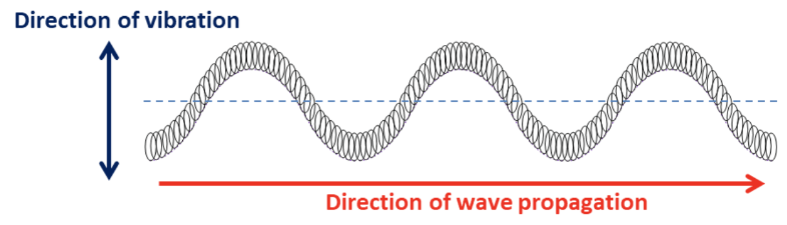

Las ondas pueden ser entendidas como la perturbación que viaja de un punto de origen a otro. Estas pueden transportar energía pero no necesariamente masa.
REAFO - Recurso Educativo de la Funcion de Onda
Ondas
Tipos de ondas
Algunas ondas pueden necesitar un medio para propagarse, como algún espacio sólido, mientras otras no lo necesitan. Estas diferencias que algunas ondas tienen se explican por su clasificación basada en su movimiento, podemos dividir las ondas en:
- Ondas transversales: El material en el cual las ondas toman lugar irá arriba y abajo, estas ondas se mueven en una dirección perpendicular con respecto a la propagación de la onda.

- Ondas longitudinales: Estas ondas son paralelas a la dirección de la propagación de la onda, esto significa que se dirigen al mismo punto al que viajan.
Características de las ondas
Las ondas pueden ser descritas por sus 5 características
- Longitud de la onda (λ), distancia entre los puntos máximos y mínimos en la onda
- Amplitud (A), distancia entre la posición no perturbada y el desplazamiento máximo de la onda
- Velocidad (v), velocidad de propagación de la onda
- Periodo (T), es el tiempo que le toma a una onda completar un ciclo
- Frecuencia (f), número de ondas pasando a través de un punto específico por minuto
Superposición de ondas
Existe un fenómeno donde dos o más ondas se combinan al estar en el mismo lugar al mismo tiempo. Existen dos casos de ese fenómeno, la interferencia constructiva pura y la interferencia destructiva pura.
La interferencia constructiva pura, toma lugar cuando dos o más ondas idénticas llegan a un punto igual al mismo tiempo y se suman, resultando en una onda con el doble de amplitud que las ondas individuales, no obstante el largo de la onda se mantiene igual.
_0.29.44.png "Figura 3. Interferencia constructiva pura (explicación visual)")
Una onda destructiva pura ocurre cuando las ondas idénticas vienen en diferentes direcciones, como resultado se cancelan entre sí.
Obra publicada con Licencia Creative Commons Reconocimiento Compartir igual 4.0